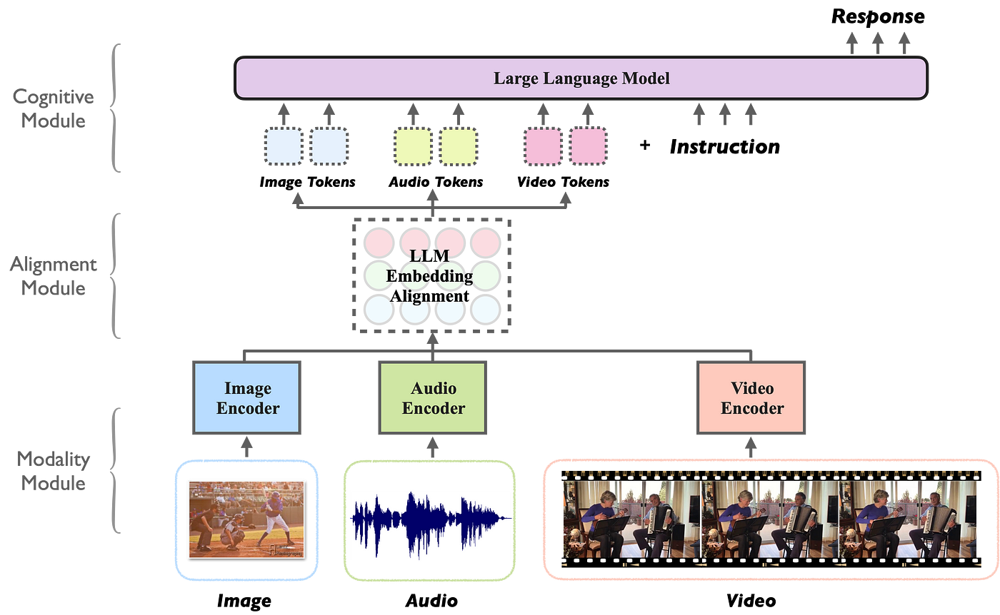

什么是多模态模型？
by @karminski-牙医

(图片来自 medium.com/@tenyks_blogger)
多模态模型（Multimodal LLM）是能够同时处理和关联多种数据模态（如文本、图像、音频、视频等）的大语言模型。这类模型通过统一表示空间，实现跨模态的语义理解和内容生成。
核心工作原理
多模态模型的工作机制包含三个关键阶段：
- 模态编码：使用专用编码器（CNN/ViT处理图像，BERT处理文本等）提取各模态特征
- 特征对齐：通过交叉注意力机制（cross-attention）建立细粒度跨模态关联（如图像区域与文本描述的对应关系）
- 联合推理：在共享表示空间中进行跨模态信息融合与语义推理
技术优势（系统实现视角）
- 统一接口：支持自然语言作为跨模态交互的统一接口
- 知识迁移：视觉-语言等跨模态知识的相互增强
- 上下文扩展：能同时利用多模态上下文信息（如文本描述+示意图）
- 数据效率：通过多任务学习提升小样本场景表现
- 灵活部署：架构灵活性：支持级联式（冻结编码器+可训练适配器）或端到端联合训练架构 (不同模态流程整合到单一神经网络中的架构)
实现挑战（工程化角度）
- 计算复杂度：多模态并行处理带来的显存/算力压力
- 对齐噪声：跨模态数据标注的噪声会影响注意力机制
- 模态鸿沟：不同模态特征分布的差异导致融合困难
- 延迟累积：级联架构中各组件（如图像编码器+LLM）的推理延迟叠加问题
- 评估困境：现有基准（如MMLU、MMBENCH）难以全面评估跨模态推理能力